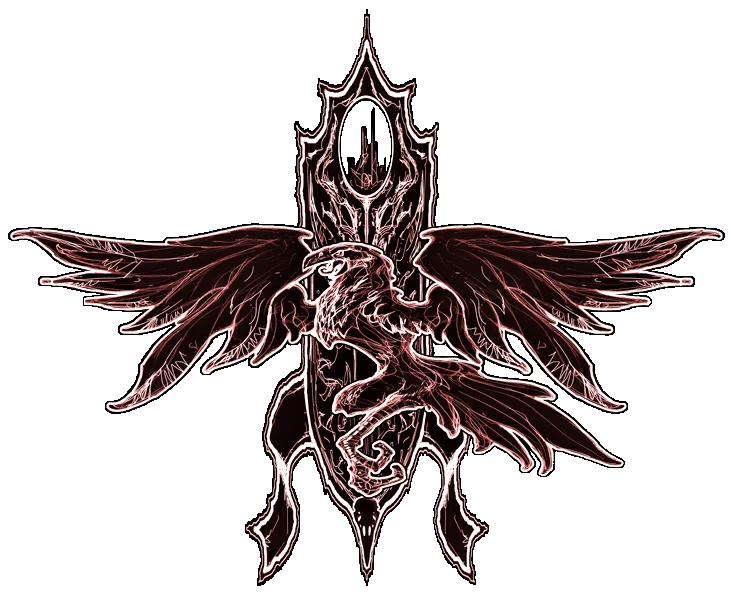
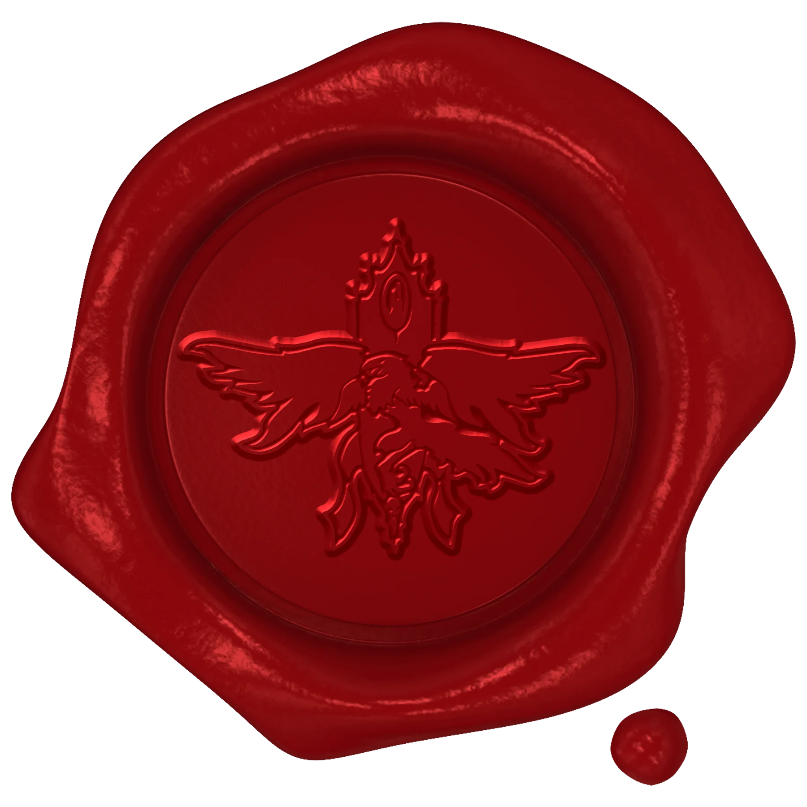

Zeer Geachte Rocky, ik hoop dat deze brief u in goede gezondheid bereikt. Uw reputatie als beschermer van de natuur is mij ter ore gekomen, en ik vrees dat uw vaardigheden hier in Barovia dringend nodig zijn.
De natuurlijke orde in deze streek is ernstig verstoord. Duistere wezens doorkruisen onze bossen, en de balans tussen leven en dood is uit evenwicht. Beesten van onnatuurlijke kracht en verderf zwerven door de valleien en bergen, hun aanwezigheid vervult de lucht met een kwaadaardig aura. De flora verkommert, en de fauna wordt gejaagd door schimmen van een ver verleden.
Barovia schreeuwt om hulp. Alleen iemand met uw talenten kan de natuur herstellen en de balans terugbrengen in dit door ellende geteisterde land. Ik smeek u, kom en gebruik uw krachten om onze wildernis te genezen. Uw toewijding aan de natuur zal niet onopgemerkt blijven. Uw moed en wijsheid zijn onze laatste hoop.

Graaf Strahd von Zarovich